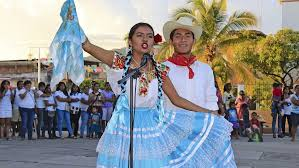

|
tradiciones, cultura |
| INICIO | TRADICIONES Y COSTUMBRES | BAILES |
BAILES
COSTA: EL BAJÍO DE GUERRERO Y OAXACA
DANZA DE LOS DIABLOS DEL BAJÍO
SAN FRANCISCO EL MAGUEY, OAXACA
VESTUARIO: DIABLOS: Máscara de piel de animales con cuernos de venado o chivo, barba o bigote de crin de fibra de caballo decorando toda la máscara, camisa vieja de manga larga y rota al igual que los pantalones de colores chillantes y botas o zapatos viejos. MINGA:Es un hombre disfrazado de mujer, llevando una máscara con características de mujer, su vestuario es una blusa bordada en punto de cruz y una falda floreada a media pantorrilla o más corta, usa huaraches de mujer y a la cintura lleva un reboso sujentando a una muñeca. |
|
CHILENAS
SANTIAGO PINOTEPA NACIONAL, OAXACA
La chilena de los indígenas de la Costa, conocida también como: “Son indígena” o “Fandango mixteco”, tiene ligeras variaciones de acuerdo al pueblo donde se baile. |
 |
El peinado que se utiliza son dos trenzas a los lados con listones de colores. Además, las mujeres portan aretes grandes, pulseras y collares de oro. En cuanto al calzado, se usan zapatos negros de tacón grueso o delgado. Los hombres visten de pantalón y camisa de manga larga; hecha de manta, color blanco. Ellos llevan dos paliacates uno en la mano y el otro amarrado en el cuello. También portan un sombrero de palma, y como calzado utilizan botines negros. |
LA IGUANA, TARIMA
TIXTLA, GUERRERO
Vestimenta para ella: Consta de falda larga y amplia de tela de satín brocado con cuchillas decoradas con encaje de color blanco, puede ser en diversos colores; la blusa es del mismo material que la falda, alforzada o plisada, decorada con botones y encaje desde el cuello hasta la cintura y aunada a un faldón circular que cubre a la falda, es de manga larga circundada con encaje, lo mismo que el cuello. El peinado es de dos trenzas entretejidas con listones de colores cruzados por la nuca y alrededor de la cabeza; se amarran los listones sobrantes y hacen un pequeño moño de lado derecho, la otra variante es una sola trenza circular con caída. Utilizan zapatos de piel y un rebozo de algodón con tramas matizadas en color negro a la espalda y enredado en las muñecas. Vestimenta para el: El atuendo del varón consiste en calzón y cotón de manta, sin cuello, mangas largas y con puños; utilizan botines negros de piel, dos paliacates de color rojo, uno aunado al cuello y el otro en la mano derecha y sombrero de palma tipo San Luis Acatlán. |
síguenos en nuestas redes sociales
Facebook: CONOCIENDO MEXICO